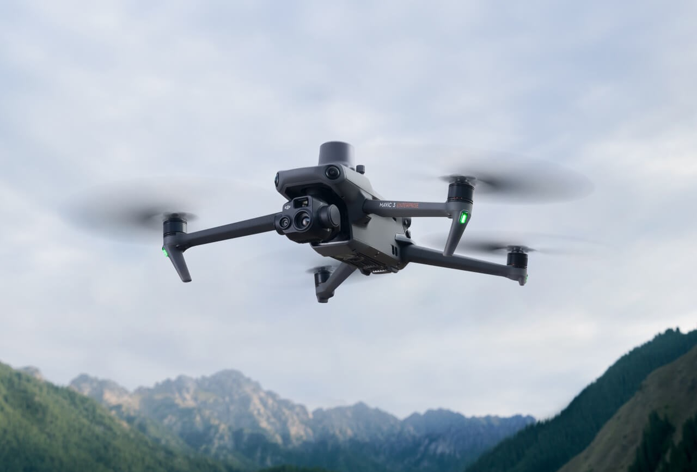
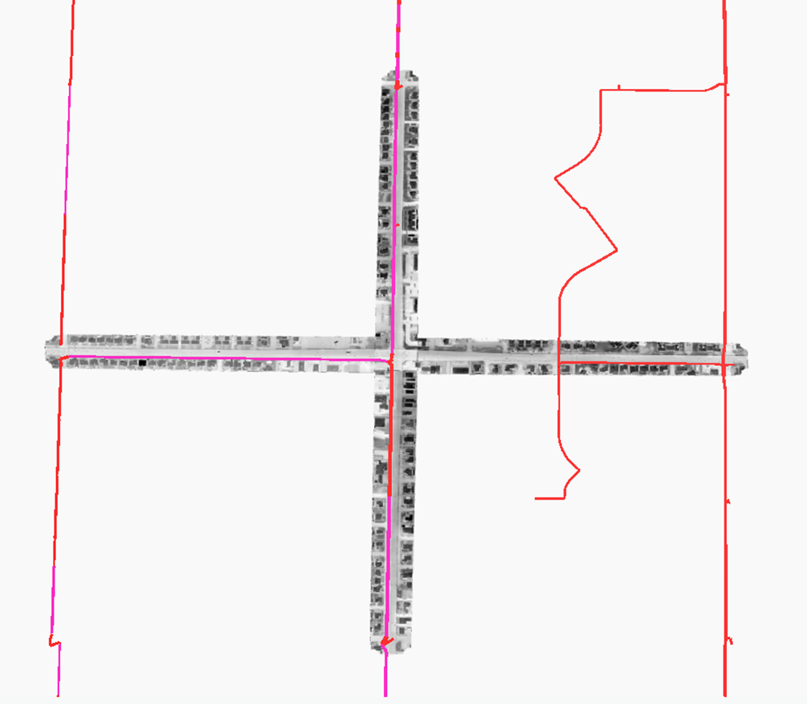
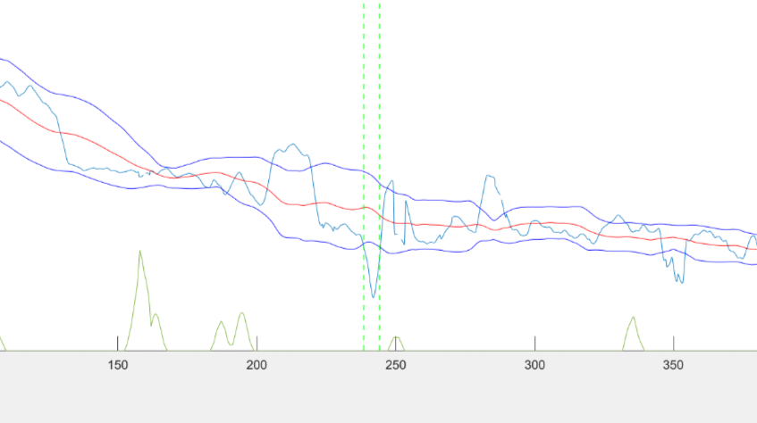
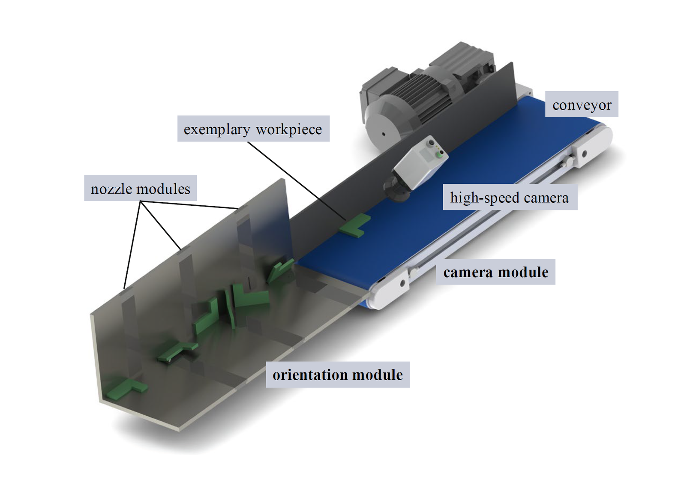
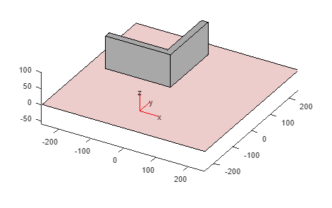
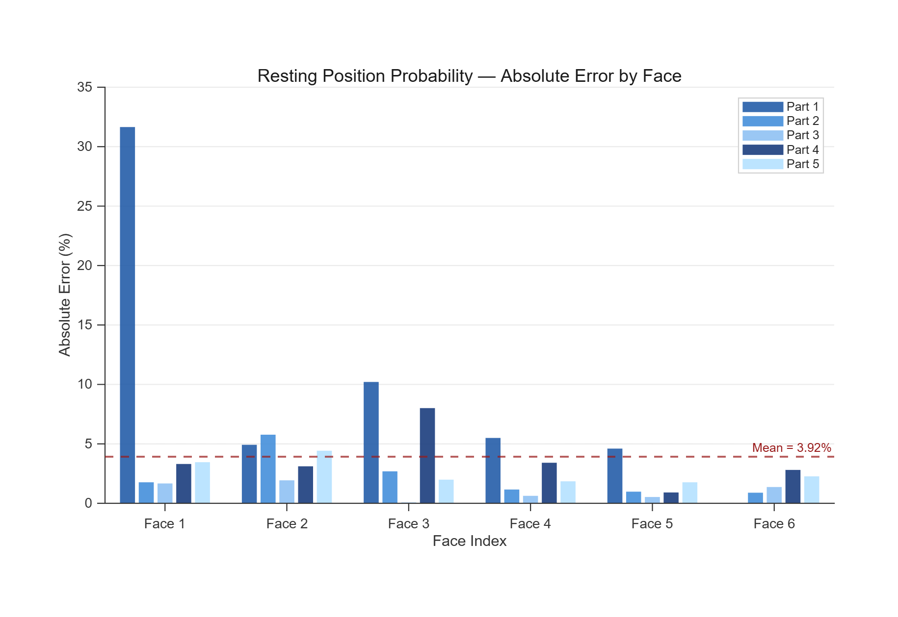

My research spans two active labs — bridging data-driven analysis with field-based engineering to extract meaningful insight from physical systems. Replace this with your own research overview.
Noninvasive high-throughput aerial thermal leakage detection for underground water pipelines
The water delivery infrastructure in Phoenix is degrading rapidly, particularly in Cast-In-Place Pipes, leading to frequent leaks undetectable until they surface. As part of this lab, I was tasked with developing a simple temperature analysis workflow into a statistically backed leak detection algorithm, powered by thermal drone imagery.

I built the orthomosaic stitching workflow in Agisoft Metashape and refined the resulting DEM and orthomosaic accuracy. Using a DJI Mavic 3T, I then flew over 20 test missions to acquire thermal data of known leaks and establish POI detection criteria. These criteria were refined through moisture analyses at two field sites to characterize surface leak behavior and a statistical model to determine temperature variance from a relative population.

Preliminary results showed the POI identification algorithm detected known leaks without human interference at 30% accuracy with a 0.2% false positive rate. I also implemented a GUI to reduce user workload by refining the temperature analysis interface, and reduced total processing time by 70.4% versus the original workflow. In the future, I will conduct more test flights to further refine the algorithm, and assist the software team in creating a packaged product.

Geometry based stable pose algorithm for Aerodynamic Re-Orientation of Workpieces
Current methods of stable pose probabilistic quantification for workpieces requires extensive modelling or testing, and can be inaccurate if not evaluated under extremely large sample sizes. By analysing the geometry of the stable pose with respect to the entire workpiece, a more accurate and defendable probability can be determined in a fraction of the time. As part of DAAD RISE, I was tasked to create an algorithm to analyze the part's geometry and return probability estimates for each stable pose, which will be applied to optimize the orientation sequence in a manufacturing chute.

The basis of my research is using the Centroid Solid Angle for each stable pose and finding it's proportion to the remaining poses. This is achieved by extracting the parts geometry, identifying valid resting positions and disregarding those that are unstable, and creating prisms between the centroid and the indices of the stable positions.

I developed a stable pose algorithm that reliably identifies every valid resting position and eliminates every unstable one — tested across 5 parts ranging from simple to complex geometries with 5–6 resting positions each, returning probability metrics with a mean absolute error of just 3.92% against simulation. I plan to continue developing the algorithm and expanding testing across additional workpiece geometries to further validate its performance.
